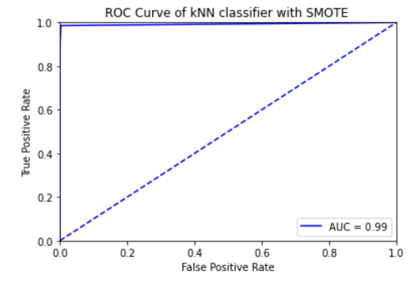
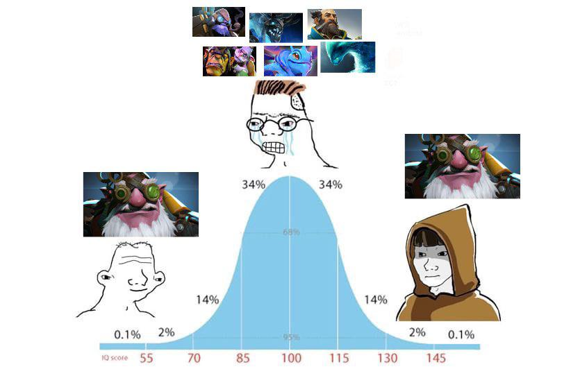

VOLUNTEER EXPERIENCE
Feb 2022
- Spearheaded a Major League Hacking-partnered hackathon, increasing student engagement by 23%.
- Facilitated discussions with tech leaders, enhancing networking opportunities for 150+ participants.
- Ensured continuity by establishing a framework for future events, improving subsequent organizer readiness.
- Conducted workshops on data analytics applications, leading to the development of three student-led hacker projects.
Jun 2021 - Jun 2022
- Grew club membership by 25% by leading initiatives in cloud and machine learning technologies within Google Cloud Platform
- Collaborated with industry experts to deliver workshops that improved student proficiency in data analytics.
- Launched a peer-mentoring program fostering five cross-disciplinary projects with real-world applications.
PROJECTS
Performed ETL on $TSLA options data by using interest rates and historical $TSLA American options data from the Chicago Board Options Exchange (CBOE), executed Monte Carlo simulations (n = 1,000,000) for each $TSLA options listed between 10/01/2023 to 11/01/2023.

Python, sklearn

Developed a kNN classifier in Python with sklearn library to perform predictions on whether a credit card usage is fraudulent on a Kaggle dataset (n=284,807)

Implemented a neural net algorithm with Tensorflow to predict the winning team in a ranked public game of Dota 2 from players’ choices of heroes.
Implemented t-SNE with Early Exaggeration Factor developed by Laurens van der Maaten and Geoffrey Hinton on MNIST dataset in Python and R.
Analyzed a ~1 billion record Brazilian e-commerce dataset by leveraging SQL queries to aggregate customer transaction data; performed RFM (Recency, Frequency, Monetary Value) in R, identifying customer purchasing patterns for targeted marketing.
Scientific Calculator developed in Java.
Online poker game develoepd in Java. Invite your friends!
Developed a specialized project focusing on soccer, utilizing Python to interface with the Bet365 API for real-time soccer match data, including team stats, player performance, and betting odds.